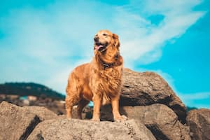

Golden Retriever
The Golden Retriever is a sturdy, muscular dog of medium size, famous for the dense, lustrous coat of gold that gives the breed its name. The broad head, with its friendly and intelligent eyes, short ears, and straight muzzle, is a breed hallmark. In motion, Goldens move with a smooth, powerful gait, and the feathery tail is carried, as breed fanciers say, with a 'merry action.'
The most complete records of the development of the Golden Retriever are included in the record books that were kept from 1835 until about 1890 by the gamekeepers at the Guisachan (pronounced Gooeesicun) estate of Lord Tweedmouth at Inverness-Shire, Scotland. These records were released to public notice in Country Life in 1952, when Lord Tweedmouth's great-nephew, the sixth Earl of Ilchester, historian and sportsman, published material that had been left by his ancestor. They provided factual confirmation to the stories that had been handed down through generations. Goldens are outgoing, trustworthy, and eager-to-please family dogs, and relatively easy to train. They take a joyous and playful approach to life and maintain this puppyish behavior into adulthood. These energetic, powerful gundogs enjoy outdoor play. For a breed built to retrieve waterfowl for hours on end, swimming and fetching are natural pastimes.
Traits
- Affectionate with Family
- Good with Young Children
- Good with Other Dogs
- Shedding More than Normal